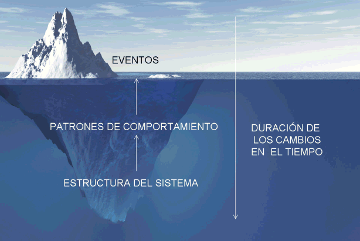
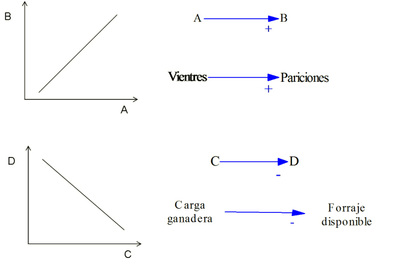
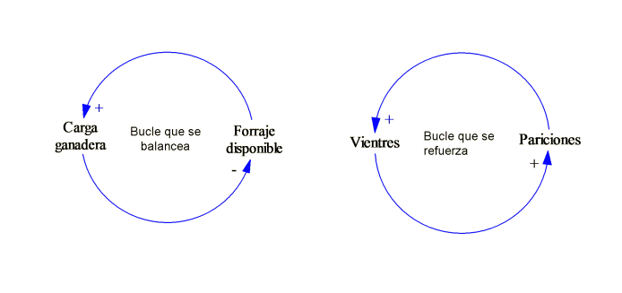
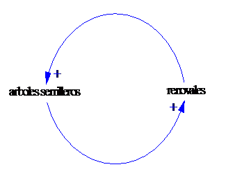

Los métodos
del pensamiento sistémico nos proveen de herramientas para
entender las dificultades de situaciones complejas. Los
métodos han sido empleados por más de treinta años,
y actualmente están bien desarrollados. Sin embargo estos
métodos requieren que realicemos un cambio en la forma en que
pensamos. En particular requieren de que nos movamos desde una
visión donde los eventos y sus causas (usualmente se asumen
que son otro evento) se dan de forma aislada, para comenzar a mirar
al predio rural como un sistema compuesto por partes que interactúan entre
sí.

Figura Nro.1 En
busca de lograr el mayor impacto (duradero).
Utilizamos el
termino sistema en relación a un grupo de items
interdependientes que forman un patrón unificado. Ya que
nuestro interés es en predios rurales nos concentraremos en
sistemas con base en los recursos naturales, donde los productores
buscan realizar una producción que les permita realizarse
humana y economicamente, y a través de producir bienes
comerciables, además de mantener o mejorar los servicios
ambientales asociados, utilizando una determinada tecnología y
en un contexto socio-económico determinado. Casi todo lo
relacionado a la producción rural en estos términos puede
decirse que está asociado a una parte de uno o más
sistemas.
Como se hizo
mención, cuando enfrentamos un problema, tendemos a asumir que
alguna causa externa produjo el evento. Desde la mirada de
sistemas, se toma un punto de vista alternativo, que podríamos
decir en que la estructura interna del sistema es usualmente
más importante que los eventos externos que generaron el
problema. Por ejemplo luego de un evento de precipitación se
observa que por lo arroyos fluyen gran cantidad de sedimentos en
suspensión y asociamos esto al evento extraordinario de
lluvia, sin embargo la baja cobertura vegetal de los campos
asociada a la pérdida de bosque por cortas no reguladas o al
intenso pastoreo, que a su vez produce por pisoteo un deterioro del
suelo en márgenes de arroyo sería la causa determinante
de la carga de sedimentos.
Esto se ilustra en
la figura nro 1, a menudo se trata de explicar los resultados, a
través de mostrar como un grupo de eventos es causa de otros,
o como un grupo de eventos forma parte de un patrón de
comportamiento. La dificultad con esta forma de pensar llamada
"eventos causa eventos" es que lleva a formas no muy efectivas para
alterar los resultados indeseables.
Como comenzar a
trazar un modelo conceptual o CLD (Causal Loop Diagram, diagrama de
causas anidadas o circulares)
Para empezar a
considerar la estructura del sistema, primero se generaliza a
partir de los eventos específicos asociados con el problema
considerando los patrones de comportamiento que caracterizan la
situación. Usualmente requiere que se investigue como una o
más variables de interés cambia en el tiempo (Como
aumenta los sedimentos en los cursos de agua, como varía la
cobertura del bosque o la productividad de los pastizales, o que
sucede con la regeneración, o que pasa con los ingresos del
productor, o como disminuye la biodiversidad). Esto es cuáles
son los patrones de comportamiento que estás variables
muestran en el tiempo.
Para entender la
estructura del sistema que produce un determinado comportamiento,
utilizaremos un tipo de notación gráfica para
representarla. En el diagrama se plasman con frases descriptivas
cuáles son los elementos que componen el sistema, donde las
flechas representan las la influencia de causas entre los
elementos. En los extremos de las flechas se adjunta un signo que
puede ser positivo (+) o negativo (-).
Una flecha causal
de un elemento A hacia un elemento B, es positivo (+) denota que un
incremento de la variable A produce un efecto similar sobre a
variable B, de la misma forma un descenso en los valores de la
variable A da lugar a la disminución de la variable B, por
ejemplo

Para completar la
presentación de la terminología utilizada para describir
la estructura del sistema es necesario mencionar que estas son
relaciones lineales de causa y efecto en cadena, las cuáles no
cierran o influyen sobre si mismas, y por ello se las denomina de
bucle abierto. Un análisis de causas y efectos que no tiene en
cuenta los bucles de retroalimentación se denominan
pensamiento de bucle abierto, y este término que usualmente se
lo utiliza con una connotación peyorativa, indica que el
pensamiento no está considerando el rango completo de impactos
de una acción propuesta.
El bucle o
retroalimentación hace referencia a que una causa tiene efecto
sobre si misma a través de influir otras variables y
viceversa. Por ejemplo en el caso de la relación A-> B
(Vientres -> Pariciones) el aumento de las pariciones trae
aparejado un incremento de los vientres, que a su vez traera
aparajedo mayores pariciones, de esta forma se genera un bucle que
se refuerza a si mismo, tanto positiva como negativamente. Por otro
lado en el caso de la relación causal C->D (carga
ganadera->forraje disponible), también se puede observar un
bucle o retroalimentación pero este será de otra
naturaleza al mencionado anteriormente, ya que el incremento de la
carga ganadera producirá una disminución de la cantidad
de forraje, y un incremento del forraje puede permitir elevar la
carga ganadera, es decir que el tipo de causa en un sentido es de
signo contrario al del sentido inverso, está da lugar a un
bucle que se balancea.


REFERENCIAS
Para una
introducción didáctica a los sistemas y los CLD puede
leer:
53
Haraldsson H.V.
2000.
97
Kinkwood C.,
Arizona State University,
Una ventaja del
enfoque de los sistemas es que ciertos comportamientos pueden
generalizarse y por ello asimilarse a distintos casos, en el
siguiente enlace pueden estudiarse algunos de los casos más
relevantes:
139
Braun
W.,
Rockefeller College of Public Affairs and Policy. University of
Albany.